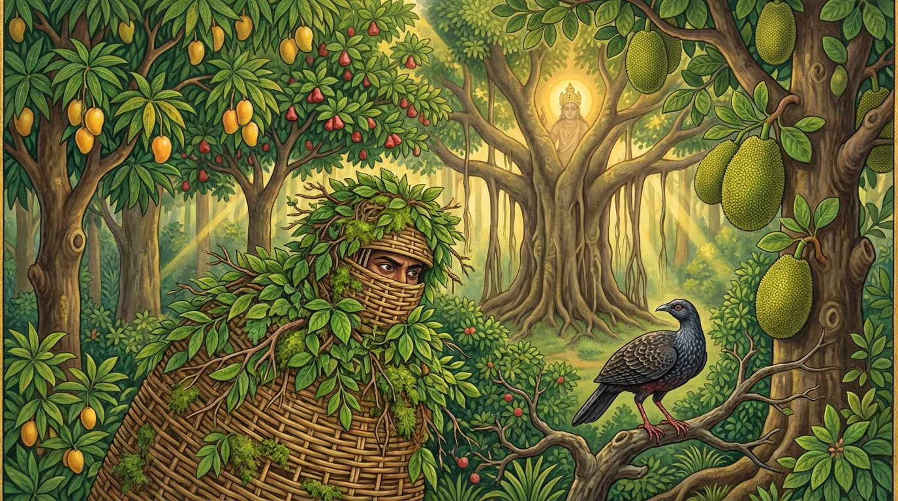

9. කුක්කුට ජාතකය (209)
“දිට්ඨා මයා වනෙ රුක්ඛා” යන මේ දේශනාව බුදුරජාණන් වහන්සේ ජේතවනාරාමයේ වැඩවාසය කරන සමයෙහි ධර්ම සේනාධිපති සැරියුත් මහා තෙරුන් වහන්සේගේ අතවැසි ලාබාල භික්ෂුවක් අරබයා වදාළ සේක. ඒ භික්ෂුව වනාහි තමන්ගේ ශරීරය ආරක්ෂා කරගැනීමේ කටයුතුවල අතිශයින් දක්ෂ විය. “මගේ ශරීරයට සැපයක් නොවන්නේ ය”යි යන බියෙන් ඉතා සීතල දේවල් හෝ ඉතා උෂ්ණ දේවල් පරිහරණය නොකරයි. “සීතලෙන් හා උෂ්ණයෙන් ශරීරය වෙහෙසෙන්නේ ය”යි යන බියෙන් බැහැරට නොයයි. ඉතා තෙත් වූ හෝ නොතැම්බුණු සහල් ආදිය (ආහාර) නොවළඳයි. ඒ භික්ෂුවගේ ශරීර ආරක්ෂාව පිළිබඳ දක්ෂභාවය සංඝයා අතර ප්රකට විය. දම්සභාවේ රැස්වූ භික්ෂූන් වහන්සේලා, “ඇවැත්නි, අසවල් ලාබාල භික්ෂුව ශරීරය ආරක්ෂා කිරීමේ කටයුතුවල දක්ෂයෙකි” යනුවෙන් කථාවක් මතු කළහ. බුදුරජාණන් වහන්සේ එහි වැඩමවා, “මහණෙනි, මේ දැන් කවර කථාවකින් යුක්තව සිටියේදැ”යි විචාරා, “මෙන්න මේ කතාවෙනි” යයි කී කල්හි, “මහණෙනි, මේ ලාබාල භික්ෂුව ශරීරය ආරක්ෂා කිරීමෙහි දක්ෂයෙක් වූයේ දැන් පමණක් නොවේ, පෙරත් දක්ෂයෙක්ව සිටියේ ය”යි වදාරා අතීත කථාව ගෙනහැර දැක්වූ සේක.
අතීතයේ බරණැස් නුවර බ්රහ්මදත්ත රජු රාජ්ය කරන සමයෙහි බෝධිසත්වයන් වහන්සේ වනයෙහි රුක් දෙවියෙක්ව උපන්හ. එකල එක් කුරුළු වැද්දෙක්, පුහුණු කළ වළිකුකුළු දෙනක් (කොරවක් දෙනක්) ද, අශ්ව කෙඳිවලින් තැනූ මලපුවක් (උගුලක්) සහ යෂ්ටියක් ද රැගෙන කැලයෙහි වළිකුකුළන් බඳින්නේ, පලාගොස් කැලයට පිවිසි එක් පරණ (පළපුරුදු) වළිකුකුළෙකු බැඳගැනීමට උත්සාහ කළේය. ඒ වළිකුකුළා මලපුඩු මගහැරීමේ දක්ෂ බැවින් තමන් අසු වීමට ඉඩ නොදෙයි; උගුල් දුටු විට නැගිට නැගිට සැඟවෙයි. වැද්දා තමන්ගේ ශරීරය අතු පතරින් වසාගෙන නැවත නැවතත් යෂ්ටිය ද උගුල ද අටවයි. වළිකුකුළා වැද්දා ලජ්ජා කරවනු කැමැත්තේ මිනිස් වචන කතා කරමින් මෙම පළමු ගාථාව කීවේය:

“වනේ රුක්ඛා මයා දිට්ඨා - අස්සකණ්ණා විභීටකා,
න තානි එවං සක්කන්ති - යථා ත්වං රුක්ඛ සක්කසී”
“එම්බල වෘක්ෂය (වැද්දාට විහිළුවට අමතන නමකි)! වනයෙහි ඇති අශ්වකර්ණ (සල්) ගස් ද, බුළු ගස් ද යන වෘක්ෂයන් මා විසින් දැක ඇත. එහෙත් ඒ ගස් ඔබ (ගසක් මෙන් සැරසී) හැසිරෙන ආකාරයෙන් එහා මෙහා නොයයි.”
මෙහි අර්ථය නම්: “යහළු වැද්දාණනි! මා විසින් මේ වනයෙහි හටගත් බොහෝ සල් ගස් ද බුළු ගස් ද පෙර දැක ඇත. ඒ ගස් ඔබ මේ එහා මෙහා ඇවිදින්නාක් මෙන්, එසේ ගමන් නොකරයි, එහා මෙහා නොසෙළවෙයි” යනුයි.
මෙසේ කියා ඒ වළිකුකුළා පලාගොස් වෙනත් තැනකට ගියේය. ඌ පලාගිය කල්හි වැද්දා දෙවන ගාථාව කීවේය:
“පොරාණකුක්කුටො අයං - භෙත්වා පඤ්ජරමාගතො,
කුසලො වාලපාසානං - අපක්කමති භාසතී”
“මැදිරිය බිඳගෙන (මීට පෙර පලා) ආ මේ පරණ වළිකුකුළා (සේවටුවා), අශ්ව වාලයෙන් (කෙඳිවලින්) ඇඹරූ මලපුවෙන් (උගුලෙන්) ගැළවීමෙහි දක්ෂ වූයේ, මිනිස් බසින් දොඩා පලා යන්නේය.”
එහි ‘කුසලො වාලපාසානං’ යනු අශ්ව ලොමින් කළ මරුවැල් (තොණ්ඩු) ආදියෙහි දක්ෂව තමා ඊට හසුවන්නට ඉඩ නොදී ඉවත් වෙයි යන්නයි. ‘භාසති ච’ යනු කරුණු ප්රකාශ කොට පලා යයි යන්නයි. මෙසේ කියා වැද්දා වනයෙහි හැසිර, ලැබුණු දෙයක් රැගෙන නිවසටම ගියේය.
බුදුරජාණන් වහන්සේ මේ ධර්ම දේශනාව ගෙනහැර දක්වා ජාතකය ගළපා වදාළ සේක. “එකල වැද්දා වූයේ දැන් මේ දේවදත්තය. වළිකුකුළා වූයේ ශරීරය ආරක්ෂා කරගැනීමට දක්ෂ වූ ලාබාල භික්ෂුවයි. ඒ කරුණ ප්රත්යක්ෂ වශයෙන් දුටු රුක් දෙවියා වනාහි ලොව්තුරා බුදුවූ මම ම වෙමි”යි වදාළ සේක.
නව වැනි වූ කුක්කුට ජාතක වර්ණනාව යි.